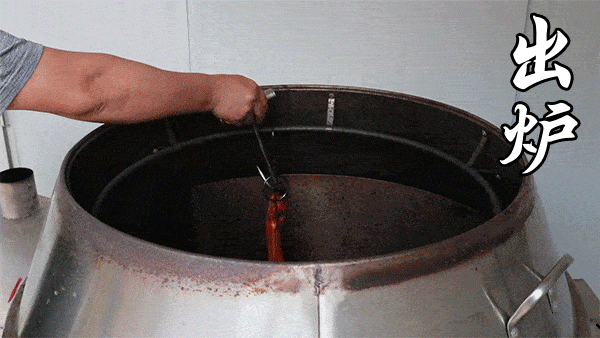
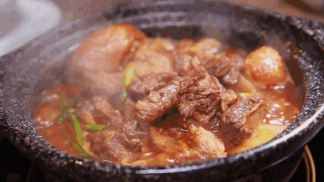

Methods
Cantonese cuisine has different intricately cooking methods, every method aims to bring out the best taste and flavor of each dish by different way which is included :
- Roast
Chefs hook the meat with a hook and then roast it in the oven. The purpose is to allow the meat to be heated evenly to achieve the best cooking effect.
 Stir-fry
Stir-fry
Stir-fries pay special attention to Wokhei(breath of a wok). The ingredients are stir-fried quickly with intense firepower, making the dish delicious and full of flavor.
- Shallot
The ingredients are cooked over medium heat for a long time until the ingredients are soft and flavourful. Usually served in a hot pan to keep piping hot.
 Steam
Steam
The principle is to put the seasoned raw ingredients in a container and cook them with steam, to retaining the original sauce, taste and flavor of the dishes.
 Pan-fry
Pan-fry
Pan-fry both sides of the ingredients to get a golden color and a combination of crispness and flavor.
 Deep-fry
Deep-fry
A method that deep-frying raw ingredients in a large amounts of oil until cooked, with battered or not .